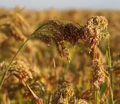
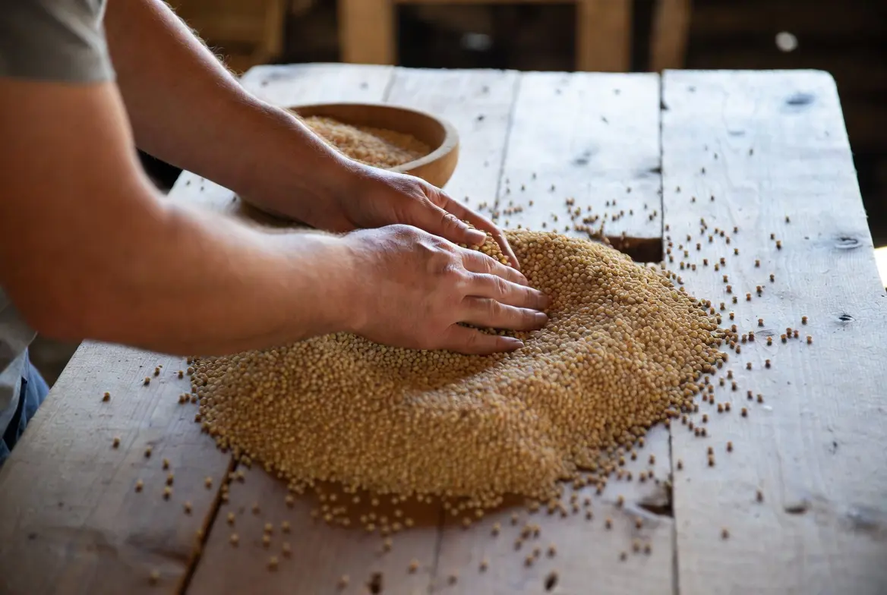
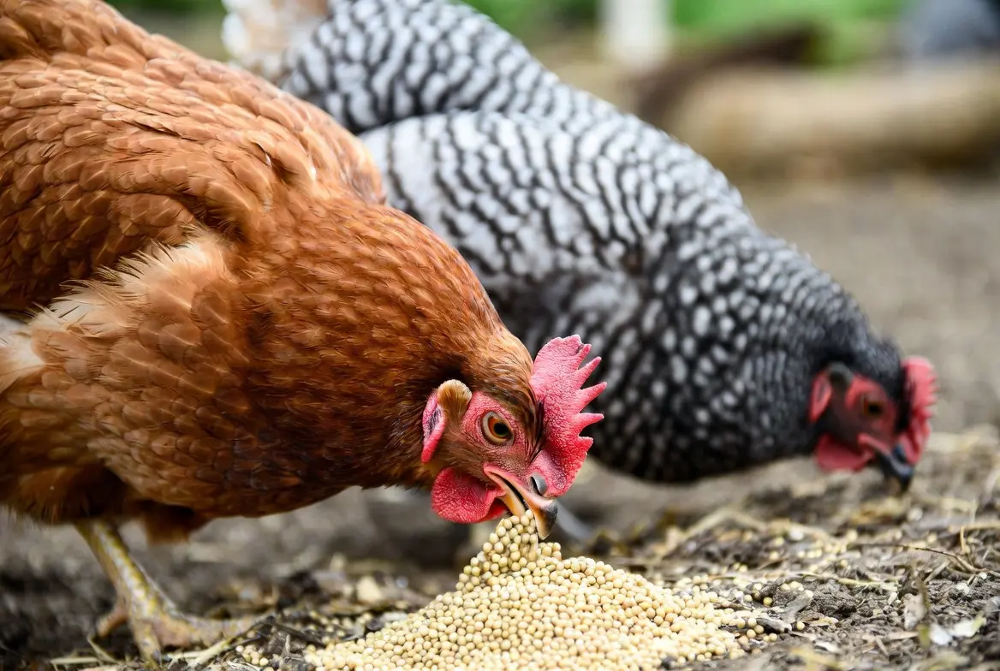

🌾 Can Chickens Eat Millet? Growing Proso Millet for Chickens
Yes, chickens can eat proso millet as a supplemental grain. Proso millet is a fast-growing warm-season crop that produces small nutritious seeds, mature seed heads for enrichment, and a storable grain source for backyard chicken keepers. This guide explains how to grow, harvest, dry, store, and safely offer proso millet to chickens.
🌾 Can Chickens Eat Proso Millet?
Yes. Chickens can eat clean, mature proso millet as a supplemental grain. It may be offered whole, cracked, coarsely ground, sprouted, cooked, or on thoroughly dried seed heads.
Most healthy adult chickens can eat whole raw proso millet because the seeds are small. Appropriate insoluble grit should still be available when chickens receive whole grains and do not otherwise have access to suitable grit.
Proso millet does not normally need to be cooked before feeding adult chickens. Chickens may also eat plain cooked millet after it has cooled, provided it is served without butter, oils, salt, sugar, milk, sauces, garlic, onions, or other seasonings.
Practical feeding forms include:
- Whole mature grain: The small seeds are suitable for most adult chickens and may be scattered in measured amounts for enrichment.
- Cracked or coarsely ground millet: Processing changes particle size but does not make millet nutritionally complete.
- Sprouted millet: Clean, untreated grain may be sprouted under sanitary conditions with good rinsing, drainage, airflow, and mold prevention.
- Cooked millet: Plain cooked grain may be offered after cooling as an occasional supplemental food.
- Millet spray or dried seed heads: Mature, thoroughly dried heads may be offered as natural pecking enrichment.
Proso millet is primarily an energy grain and is low in lysine. It does not provide enough calcium, balanced amino acids, vitamins, or minerals to replace chick starter, grower feed, layer feed, or another complete poultry ration. Never feed moldy, damp, heated, chemically treated, insect-damaged, or contaminated millet.
🌾 Is Proso Millet a Good Crop for Chickens?
Proso millet is one of the more practical grain crops for backyard chicken keepers because it matures quickly, requires relatively little space, and can produce a useful amount of small grain without the equipment demands of larger cereal crops. For a small flock, its greatest value comes from providing a homegrown supplemental energy source and a natural pecking opportunity through mature seed heads.
For chicken keepers, proso millet can provide:
- Carbohydrate energy
- Moderate grain protein
- Pecking and foraging enrichment
- A relatively short growing season
- Better drought tolerance than many common grains
- Dry grain that may be stored for later use
Its main limitations are harvesting labor, threshing, bird pressure, weed competition, and incomplete nutrition. Millet is useful as a supplement—not as a substitute for balanced poultry feed.
- Fast maturity allows harvest before many longer-season grain crops.
- Small seed size makes it easy for chickens to consume whole grain.
- Dried seed heads can provide enrichment and natural foraging behavior.
- The crop can be grown in smaller plots where corn or larger grains may not be practical.
- Stored grain can provide a seasonal supplemental feed source.
Although proso millet can provide energy and variety, it does not contain the complete balance of protein, amino acids, vitamins, and minerals needed by chickens. Continue providing a nutritionally complete poultry ration.
Is This Crop Right for Your Flock and Backyard?
Crop success depends on more than whether chickens can eat it. Climate, growing space, sunlight, soil, water, labor, processing, equipment, harvest goals, and storage all affect whether it is a practical choice for your property.
🌱 Use the Feed Crop Planner →📋 Proso Millet Quick Facts
🌱 Which Type of Millet Should You Grow?
“Millet” is a broad name covering several different grain and forage crops. Proso millet should not be confused with pearl millet, foxtail millet, Japanese millet, browntop millet, or finger millet.
If you are comparing millet with other homegrown grain crops, you may also want to explore options like grain sorghum, sunflowers, and oats to see which crops best fit your space and climate.
Proso Millet
A short-season grain crop that produces small round seeds commonly found in birdseed mixtures.
This guide and the Backyard Chicken Planner database are specifically focused on proso millet.
Pearl Millet
A taller, warm-season millet often grown for forage, grain, grazing, or wildlife plantings.
Its growth habit and feeding characteristics are different enough to require a separate future guide.
Japanese and Foxtail Millet
These crops are frequently used for forage, wildlife, hay, or grain depending on the species and variety.
They should not be substituted directly into proso millet planting or nutrition recommendations.
Purchase a named proso millet planting variety from a reputable seed supplier. Do not assume that a bag of mixed birdseed has suitable germination, purity, treatment status, maturity, or variety identification for garden planting.
🗓 When to Plant Proso Millet
Proso millet is frost-sensitive and should be planted only after frost danger has passed and the soil has warmed.
Because it matures more quickly than many grain crops, it may fit into short growing seasons or follow an early spring vegetable crop where enough warm days remain.
For backyard chicken keepers, the best planting date is not only about reaching maturity. It also affects when the grain will be available for the flock. A planting timed for a dry harvest window can make threshing, drying, and storage much easier.
Because proso millet has small seed and shallow planting requirements, a well-prepared seedbed is often more important than adding large amounts of fertilizer. Focus first on good soil contact, warm soil, moisture during germination, and early weed control.
| Region | General Planting Approach | Likely Harvest Period |
|---|---|---|
| Cold North | Plant after frost in late spring or early summer once soil is warm. Choose an early-maturing variety. | Late summer through early fall before hard frost. |
| Midwest and Northeast | Direct sow from late spring into early summer. The short season may allow planting after an early vegetable crop. | Late summer through early fall. |
| Upper South | Plant from spring into early summer after frost. Later plantings may mature if 60 to 90 warm days remain. | Summer through early fall. |
| Deep South | Plant during warm weather from spring into summer. Try to avoid placing harvest in a prolonged wet period. | Summer through fall. |
| Southwest | Plant after frost once the soil is warm. Irrigation may improve establishment and grain filling. | Summer into fall, depending on elevation and planting date. |
| Pacific Northwest | Plant after frost in the warmest available location. Select an early variety in cool-summer areas. | Late summer through early fall. |
| Coastal West | Plant after frost when soil is consistently warm. Inland valleys are generally more dependable than cool, foggy areas. | Summer through fall. |
📐 How Much Space Does Proso Millet Need?
Proso millet is generally broadcast or planted in closely spaced rows rather than treated as individually spaced garden plants.
Common planting approaches include:
- Broadcasting seed over a prepared bed
- Drilling seed into closely spaced rows
- Planting rows approximately 6–10 inches apart
- Using somewhat wider rows where hand cultivation is necessary
Millet is managed by seeding rate and final stand rather than permanent individual plant spacing. Germination, emergence, row width, weed pressure, soil moisture, and tillering all change the number of stems present at harvest.
A future Feed Garden Planner should calculate millet from seed weight per area rather than from the number of individual plants.
For a first backyard trial, a small planting area is usually more useful than attempting a large harvest immediately. A 25–50 square foot test plot can help determine whether millet grows well in your climate, how much bird pressure exists, and whether the harvesting effort fits your available time.
🪴 How to Plant Proso Millet
- Choose a full-sun location. Select an open area receiving at least six hours of direct sunlight, preferably more.
- Wait for warm soil. Plant after frost danger has passed and the soil reaches approximately 55–60°F or warmer.
- Prepare a firm, weed-free seedbed. Millet seedlings are small and may struggle where large weeds or rough soil dominate the planting area.
- Sow shallowly. Plant approximately one-half to one inch deep. Avoid burying the small seed too deeply.
- Use rows or broadcast carefully. Rows make hand weeding and observation easier. Broadcasting may create more complete ground coverage but can complicate weed control.
- Keep the surface moist during establishment. Do not allow the shallow seed zone to dry repeatedly before germination.
- Control weeds early. Remove weeds before they overtake the young millet stand.
🌱 Seedbed Preparation and Weed Control
Weed competition is one of the main challenges in a small millet plot. The plants may eventually form a dense stand, but young seedlings can be overwhelmed before they establish.
For a beginner-scale planting:
- Clear perennial weeds before sowing
- Create a reasonably level and firm seedbed
- Avoid planting into thick sod without proper preparation
- Use rows when hand cultivation will be necessary
- Remove large weeds before they set seed
- Avoid disturbing millet roots deeply during cultivation
A stale-seedbed approach may help: prepare the bed, allow an initial flush of weeds to emerge, remove them, and then plant the millet with minimal additional soil disturbance.
💧 Watering Proso Millet
Proso millet is comparatively drought tolerant, but dependable germination and grain filling still require moisture.
Water is especially useful during:
- Germination
- Seedling establishment
- Rapid vegetative growth
- Flowering
- Grain filling
Once established, proso millet may tolerate dry periods better than corn. However, severe drought can reduce plant height, seed-head size, grain filling, and total harvest.
Avoid continuously saturated soil. Millet generally performs best in well-drained ground.
🌾 Recognizing Flowering and Grain Development
Proso millet develops branching seed heads called panicles. Small flowers form along the branches, followed by developing grain.
As the crop matures:
- The plants gradually lose their bright green color
- Seed heads change from soft and green to firmer and drier
- Individual grains become hard
- The seed reaches its mature variety-specific color
- Lower leaves may begin drying
Maturity may not be perfectly uniform across every branch or plant. Waiting too long can increase shattering, wild-bird loss, lodging, and weather damage.
🐦 Protecting Millet from Wild Birds
Wild birds may begin feeding on millet as soon as the grain becomes attractive. Because the seeds are exposed on open panicles, losses can occur quickly.
Possible protections include:
- Bird netting supported above the crop
- A lightweight framed enclosure for a very small plot
- Reflective or movement-based deterrents that are changed frequently
- Harvesting mature heads before excessive shattering or bird loss
- Finishing the drying process under protected cover
Loose or poorly supported netting can entangle wildlife or chickens. Keep it tight, visible, and secured so animals cannot become trapped.
🔎 How to Tell When Proso Millet Is Ready to Harvest
The grain should be mature and firm before harvest. Common signs include:
- Most seeds have developed their final color
- The grain is hard rather than soft or milky
- The panicle has changed from green toward tan or brown
- Much of the plant has begun drying
- Seeds can be rubbed loose from mature portions of the head
Do not wait until every plant is completely dead if birds, rain, lodging, or shattering are causing losses.

✂️ How to Harvest Proso Millet
Harvesting proso millet requires waiting until the grain is mature and firm while avoiding excessive seed loss from birds, weather, or shattering. Small plantings can be harvested by hand using simple tools before the heads are dried, threshed, and stored.
- Grow the crop until most seed heads are mature and dry.
- Cut and collect the heads during dry weather.
- Dry harvested heads completely before threshing.
- Separate grain from chaff using hand threshing and winnowing methods.
- Store clean, dry grain until it is needed for supplemental feeding.
- Choose a dry harvest period. Avoid cutting saturated plants immediately after rain or heavy dew.
- Inspect several seed heads. Confirm that most grains are mature and firm.
- Cut the panicles. Use hand pruners, shears, a sickle, or another safe tool suited to the size of the plot.
- Collect heads carefully. Place them in a clean container or on a tarp to reduce seed loss.
- Move them under cover. Protect harvested heads from rain, dew, rodents, and wild birds.
- Finish drying before threshing or storage. Keep the heads in thin layers or loosely bundled with strong airflow.
🧺 How to Thresh Millet by Hand
Threshing separates the mature grain from the panicle.
Small amounts may be threshed by:
- Rubbing dry heads between gloved hands
- Beating heads gently inside a clean container
- Placing dry heads in a sturdy bag and working them carefully
- Using a small hand-powered grain thresher
After threshing, the grain will be mixed with chaff, broken stems, dust, and immature seeds.
Winnowing with a gentle fan or natural breeze can remove lighter debris. Work over a tarp or large container so usable seed is not lost.
Threshing and winnowing can create dust and airborne plant material. Work outdoors or in strong ventilation and use suitable eye and respiratory protection when conditions are dusty.
🌬 Drying Millet Grain Safely
Millet must be thoroughly dry before it is sealed in storage.
For a small harvest:
- Spread grain or seed heads in a thin layer
- Use a warm, dry, shaded, well-ventilated location
- Stir or turn the material periodically
- Protect it from rain, dew, rodents, insects, and chickens
- Remove green, damaged, moldy, or insect-infested material
- Do not seal grain that still feels damp or warm
When there is doubt about dryness, continue drying rather than risking mold and heating in storage.
🪣 Storing Homegrown Proso Millet
Store clean, fully dried millet in a cool, dark, dry location inside a food-safe container that excludes moisture, rodents, and insects.
Inspect stored grain periodically for:
- Condensation
- Heating
- Musty or sour odors
- Visible mold
- Webbing or insects
- Clumping
- Discoloration
- Rancid or stale odor
Whole grain generally stores better than cracked or ground millet because processing exposes more surface area to air, moisture, insects, and deterioration.

🐔 How to Feed Proso Millet to Chickens
Proso millet can be offered as a supplemental grain, enrichment treat, dried seed heads, or a properly prepared ingredient in a balanced feeding program. Whole mature millet is small enough for adult chickens to consume and can encourage natural pecking behavior.
The best feeding method depends on how the millet was harvested and processed. Whole dried seed heads are useful for enrichment, while cleaned grain is better suited for measured supplemental feeding.
- Whole mature grain
- Cracked or coarsely ground grain
- Whole dried seed heads for pecking enrichment
- Sprouted grain produced under sanitary conditions
- A measured ingredient in a properly balanced ration
Adult chickens can generally consume whole millet seeds because the grain is small. Seed heads can also be hung or placed in a clean feeder area to encourage pecking and foraging.
Proso millet is primarily an energy grain. It is low in lysine and does not supply the calcium, vitamins, minerals, or balanced amino acids required by laying hens.
🥗 Proso Millet Nutrition for Chickens
Whole proso millet grain commonly contains approximately:
| Nutritional Measure | Approximate Value | Why It Matters |
|---|---|---|
| Crude protein | Approximately 11–13% | Moderate for a cereal grain, but low lysine limits protein quality. |
| Fat | Approximately 3–4% | Contributes some energy but is much lower in fat than sunflower seed. |
| Fiber | Approximately 2–8% | Varies depending on hull content and how the grain is analyzed. |
| Carbohydrates and starch | Primary nutrient contribution | Provides most of millet’s poultry-feed energy. |
| Calcium | Low | Cannot meet the calcium needs of laying hens. |
| Phosphorus | Moderate total amount | Not all phosphorus is fully available to poultry. |
Proso millet may also provide magnesium, manganese, phosphorus, B vitamins, iron, zinc, and unsaturated fatty acids.
Whole grain, hulled millet, millet flour, sprouts, and green forage have different nutritional values and should not be treated as interchangeable.
⚠️ Millet Feeding and Safety Limitations
- Do not replace balanced poultry feed with millet alone.
- Do not feed moldy, musty, damp, fermented, or insect-damaged grain.
- Do not feed planting seed treated with fungicides, insecticides, or other chemicals.
- Do not assume all millet species have the same nutritional value.
- Do not rely on millet to supply sufficient calcium for laying hens.
- Do not overfeed grain supplements that reduce complete-feed consumption.
- Introduce unfamiliar supplemental foods gradually.
- Keep sprouting equipment clean if grain is sprouted for the flock.
🐛 Common Proso Millet Problems
| Problem | What You May Notice | Possible Response |
|---|---|---|
| Poor germination | Thin or uneven stand | Wait for warm soil, avoid planting too deeply, and keep the shallow seed zone moist during establishment. |
| Weed competition | Broadleaf weeds or grasses overtake young millet | Prepare a clean seedbed, plant in rows when hand cultivation is needed, and remove weeds early. |
| Lodging | Plants lean or fall before harvest | Avoid excessive fertility, use an adapted variety, and harvest promptly when mature. |
| Wild-bird loss | Seed disappears from exposed panicles | Use supported netting, deterrents, or earlier protected harvest. |
| Seed shattering | Grain falls before or during harvest | Monitor maturity closely and cut heads before excessive loss occurs. |
| Mold during drying | Musty odor, discoloration, heating, or visible growth | Increase airflow, spread material more thinly, and discard affected grain. |
| Stored-grain insects | Webbing, dust, holes, or insects | Remove contaminated material, clean storage areas, and use sealed containers. |
For small backyard plantings, the value of proso millet is often found in self-sufficiency, enrichment, and learning rather than replacing large amounts of purchased feed. Hand harvesting and threshing require time, and the labor involved should be considered when deciding how much millet to grow.
📊 Is Proso Millet Worth Growing for Chicken Feed?
Proso millet can be worthwhile when a grower wants a short-season grain that tolerates heat and limited moisture better than many common cereals.
Potential advantages include:
- Fast maturity
- Low to moderate irrigation requirements
- Useful grain for enrichment
- Dry storage potential
- Compatibility with short growing seasons
- Possibility of following an early garden crop
- Relatively inexpensive planting seed
Its greatest disadvantages are bird pressure, weed competition, hand harvesting, threshing, cleaning, and the low market price of purchased millet.
On a very small plot, the crop may provide more educational and enrichment value than direct feed-cost savings.
🌾 A Simple Beginner Millet Plan
For a first attempt, plant a small bed of approximately 25–50 square feet using a named proso millet variety.
- Prepare a clean, firm seedbed.
- Plant after frost when the soil is warm.
- Use closely spaced rows so weeding is manageable.
- Keep the seedbed moist until seedlings establish.
- Remove weeds early.
- Watch developing heads for wild-bird activity.
- Harvest several mature heads before weather or wildlife causes major loss.
- Dry and thresh the heads separately from other grain.
- Offer a dried seed head to the flock as enrichment.
This trial will show whether millet matures reliably in your climate and whether the harvesting and threshing effort is worthwhile for your household.
❓ Frequently Asked Questions
Can chickens eat proso millet?
Yes. Adult chickens can eat clean, mature proso millet as a supplemental grain. It may be offered whole, cracked, coarsely ground, cooked, sprouted, or on thoroughly dried seed heads.
Is proso millet the same as regular millet?
Proso millet is one specific type of millet. The word “millet” can also refer to pearl millet, foxtail millet, Japanese millet, finger millet, and other crops with different growth habits and uses.
Can chickens eat whole millet seeds?
Yes. Proso millet seeds are small enough for most healthy adult chickens to consume whole. Appropriate insoluble grit should be available when birds receive whole grains and do not otherwise have access to suitable grit.
Does millet need to be cooked for chickens?
No. Clean, mature proso millet does not normally need to be cooked for adult chickens. Whole raw grain may be offered in measured amounts as a supplemental food.
Can chickens eat cooked millet?
Yes. Plain cooked millet may be offered after it has cooled. Serve it without butter, oils, salt, sugar, milk, sauces, garlic, onions, or other seasonings.
Can chickens eat millet from birdseed?
Some birdseed mixtures contain millet that chickens can eat, but check the complete ingredient list first. Avoid products containing treated seed, added chemicals, excessive fillers, or ingredients that are not appropriate for poultry. Clean feed-grade or food-grade millet is a better choice.
Can chickens eat millet seed heads?
Yes. Mature, thoroughly dried millet seed heads may be offered as natural pecking enrichment when they are clean, untreated, and free from mold, insects, rodents, and other contamination.
Can chickens eat millet spray?
Yes. Millet spray is a mature millet seed head and may be offered as an enrichment treat. It should be clean, dry, untreated, and fed in moderation alongside complete poultry feed.
Can chickens eat sprouted millet?
Yes. Clean, untreated millet may be sprouted under sanitary conditions. Maintain good rinsing, drainage, and airflow, and discard sprouts that develop mold, slime, discoloration, heating, fermentation, or unpleasant odors.
Can baby chicks eat millet?
Baby chicks should receive a complete chick starter feed as their primary diet. Supplemental millet is better reserved for older birds unless it is appropriately processed and included in a professionally formulated starter ration. Chicks receiving supplemental foods also need appropriately sized grit.
Can chickens eat millet every day?
Small amounts may be offered regularly, but millet should remain supplemental. Feeding too much grain can reduce the flock’s intake of complete poultry feed and dilute the overall nutritional balance.
Is proso millet better than corn for chickens?
Neither crop is universally better. Proso millet may mature faster, require less space, and tolerate dry conditions better, while corn may produce more grain under favorable conditions. Both are primarily energy grains and neither is a complete poultry feed.
Can millet replace layer feed?
No. Proso millet is low in lysine and does not provide enough calcium, balanced amino acids, vitamins, or minerals to replace a complete layer ration.
Can chickens eat moldy millet?
No. Do not feed millet that is moldy, musty, damp, heated, unintentionally fermented, insect-infested, chemically treated, or contaminated by rodents. Questionable grain should be discarded.
How long does proso millet take to mature?
Many proso millet varieties mature in approximately 60 to 90 days, although variety, planting date, temperature, rainfall, and growing conditions can change the actual harvest date.
Will growing millet reduce my chicken-feed bill?
Possibly, but savings depend on usable grain yield, wild-bird losses, harvesting labor, threshing efficiency, drying, storage success, and local feed prices. Small plots may provide more enrichment and educational value than major feed-cost savings.
🌱 Explore More Feed Crops
🧰 Helpful Chicken Planning Tools
📚 Research Sources
This guide was developed from university Extension publications, peer-reviewed crop research, government nutrient resources, and the Backyard Chicken Planner feed-crop database.
Used for planting practices, production regions, maturity, crop management, harvesting, grain handling, and common uses.
Used for crop adaptation, short maturity, drought tolerance, production potential, grain characteristics, and cool-region considerations.
Used for poultry feed, livestock feed, birdseed, food, brewing, and other possible grain uses.
Used for general millet grain composition, amino-acid limitations, processing, and nutrient variability.
Used for general nutrient context for raw and cooked millet grain.